import os
credentials = [
["ftp://ftp.transtechprojects.com/","mitstudents@transtechprojects.com","students456#$"],
["ftp://ftp.transtechprojects.com/","mitstudents1@transtechprojects.com","students123#$"],
["ftp://ftp.transtechprojects.com/","mitstudents2@transtechprojects.com","students234#$"]
]
Settings.TypeDelay = 0.1
Settings.MoveMouseDelay = 0.5
keyDown(Key.WIN)
type('r')
keyUp(Key.WIN)
type("FileZilla"+Key.ENTER)
for i in range(0,len(credentials)):
host = credentials[i][0]
username = credentials[i][1]
password = credentials[i][2]
doubleClick(Pattern(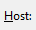).exact().targetOffset(30,9))
type(host)
doubleClick(Pattern( ).similar(0.80).targetOffset(37,7))
type(username)
doubleClick(Pattern(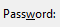).similar(0.80).targetOffset(37,-2))
type(password+Key.ENTER)
if exists(Pattern(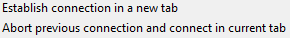).similar(0.75)):
click(Pattern().similar(0.75).targetOffset(-153,8))
type(Key.ENTER)
wait(,50)
print("Connected.")
cwd = "C:\Users\\21ksh\Desktop\GUI_Automation.sikuli" #change this path
path = os.path.join(cwd, username)
if not os.path.exists(path):
os.makedirs(path)
else:
pass
click(Pattern(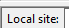).exact().targetOffset(52,2))
type(Key.DELETE)
type(path+Key.ENTER)
Settings.MoveMouseDelay = 1.0
wait(Pattern(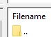).similar(0.80).targetOffset(8,19))
click(Pattern().similar(0.80).targetOffset(8,19))
keyDown(Key.CTRL)
type('a')
keyUp(Key.CTRL)
type(Key.ENTER)
sleep(5)
if exists(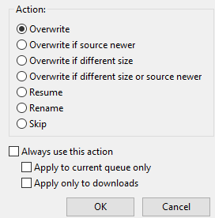):
click(Pattern().targetOffset(-108,-82))
click(Pattern().targetOffset(-102,72))
click(Pattern().targetOffset(-9,125))
wait(Pattern(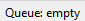).exact(),600)
).similar(0.80).targetOffset(37,7))
type(username)
doubleClick(Pattern(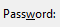).similar(0.80).targetOffset(37,-2))
type(password+Key.ENTER)
if exists(Pattern(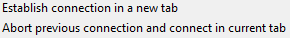).similar(0.75)):
click(Pattern().similar(0.75).targetOffset(-153,8))
type(Key.ENTER)
wait(,50)
print("Connected.")
cwd = "C:\Users\\21ksh\Desktop\GUI_Automation.sikuli" #change this path
path = os.path.join(cwd, username)
if not os.path.exists(path):
os.makedirs(path)
else:
pass
click(Pattern(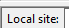).exact().targetOffset(52,2))
type(Key.DELETE)
type(path+Key.ENTER)
Settings.MoveMouseDelay = 1.0
wait(Pattern(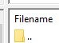).similar(0.80).targetOffset(8,19))
click(Pattern().similar(0.80).targetOffset(8,19))
keyDown(Key.CTRL)
type('a')
keyUp(Key.CTRL)
type(Key.ENTER)
sleep(5)
if exists(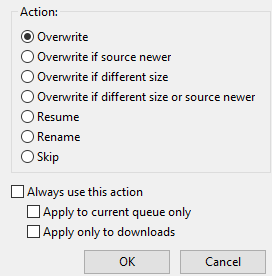):
click(Pattern().targetOffset(-108,-82))
click(Pattern().targetOffset(-102,72))
click(Pattern().targetOffset(-9,125))
wait(Pattern(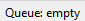).exact(),600)